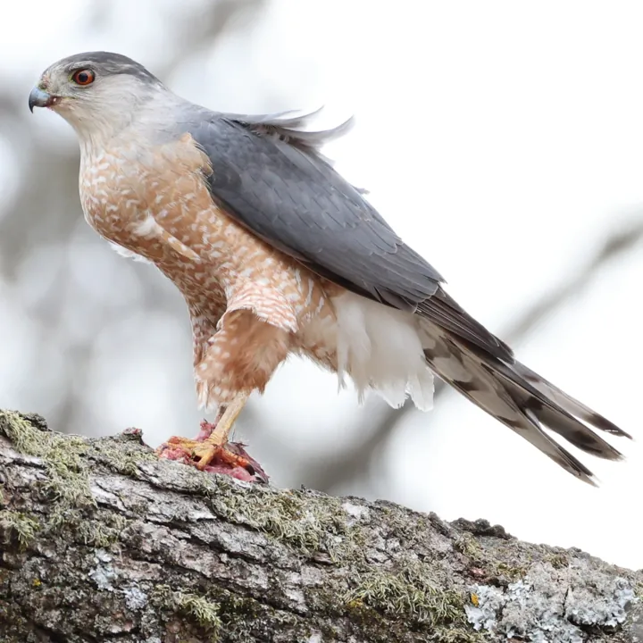
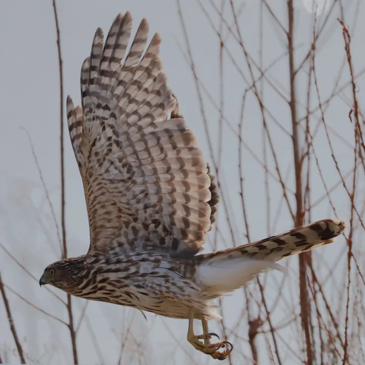

Cooper's Hawk
Astur cooperii · Lifer #110
Photos: 16
Forms: 1
US-IAUS-ILUS-VA
Monotypic.
Plumage consistent.
M/F similar, BOW notes similar but male is more brightly colored so some chance one could make an id.

